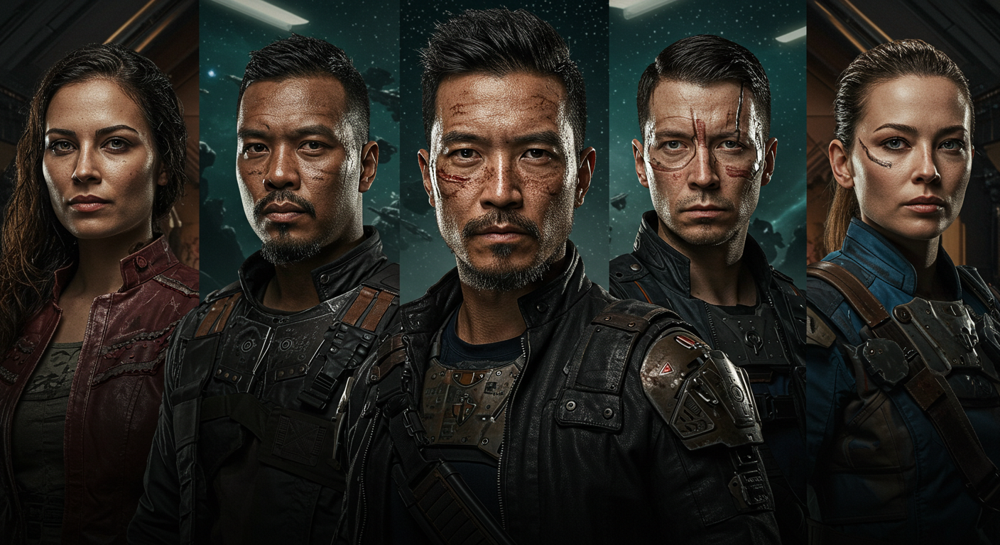
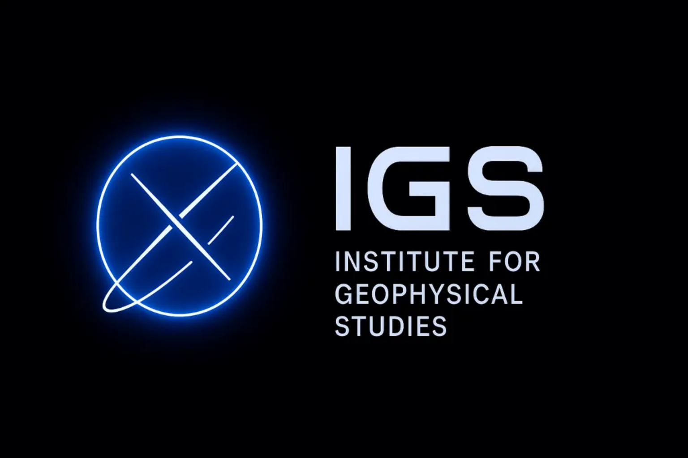
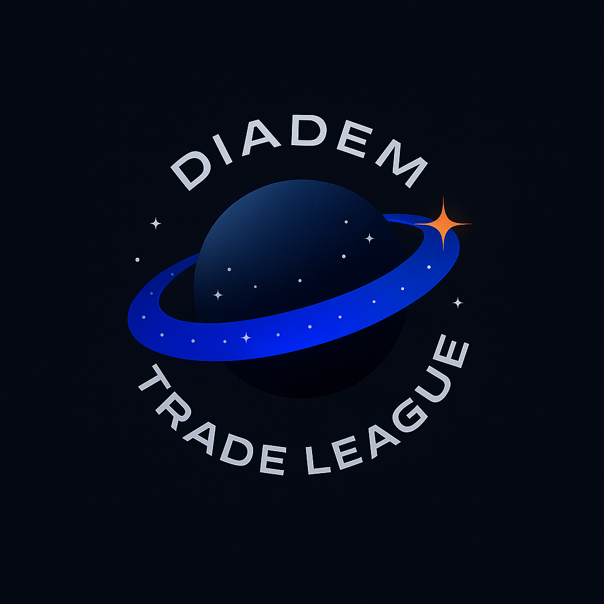
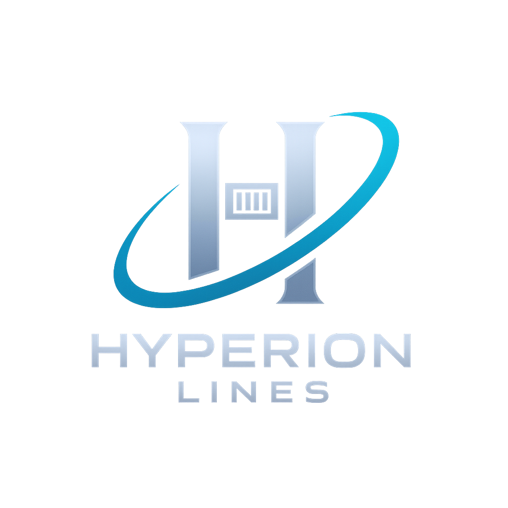
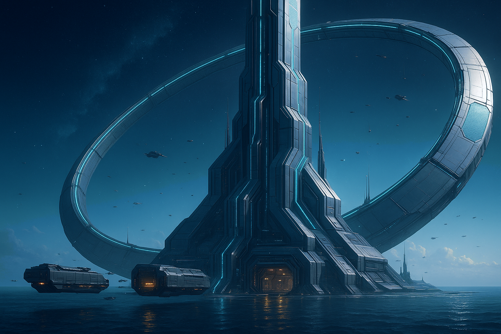
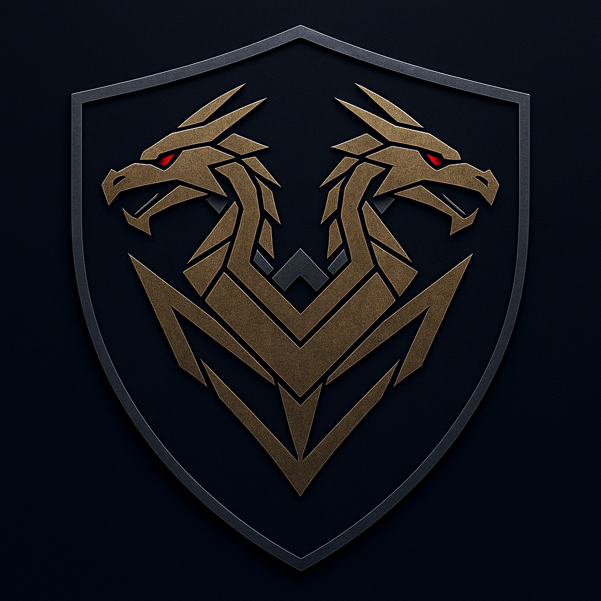

Filters
Type
Faction
Mission
Colonnade University
The Colonnade University stands as one of the most prestigious institutions of higher learning in the Vanguard Reaches. Founded in 1023, it has grown to become a center of academic excellence and cultural exchange, attracting students and scholars from across the sector.
Academic Programs
The university offers comprehensive studies in sciences, humanities, and technical fields, with particular emphasis on:
- Interstellar Studies: Diplomatic relations, trade economics, and cultural exchange
- Advanced Sciences: Physics, engineering, and technological research
- Cultural Arts: Literature, music, and visual arts from across the sector
- Political Science: Governance systems and administrative theory
Research Facilities
The university maintains state-of-the-art laboratories and research centers, including:
- Advanced Physics Laboratory: Cutting-edge research in quantum mechanics and space-time physics
- Cultural Archives: Extensive collection of artifacts and documents from across the Vanguard Reaches
- Diplomatic Training Center: Simulation facilities for training future ambassadors and negotiators
- Technology Innovation Hub: Collaborative space for developing new technologies and applications
Cultural Exchange
The university hosts regular symposiums and conferences with representatives from various worlds, fostering understanding and cooperation across the sector. Notable events include:
- Annual Sector Summit: Gathering of academic and political leaders from across the Vanguard Reaches
- Cultural Festival: Celebration of diverse traditions and artistic expressions
- Research Symposium: Presentation of breakthrough discoveries and innovations
Notable Alumni
Many graduates have gone on to serve in prominent positions within the Zhodani Consulate and beyond:
- Ambassador Voristlas: Current diplomatic representative to the Vanguard Reaches
- Professor Albericiepr: Leading researcher in interstellar communications
- Council Member Renniepr: Senior administrator in the Colonnade Province
Main Campus

The Colonnade University campus in Nielkladlief serves as the premier center of learning in the Zhodani Consulate Colonnade Province. The campus features state-of-the-art facilities, extensive research laboratories, and beautiful architectural designs that reflect the cultural heritage of the Zhodani people.
Void Vultures Pirates
The Void Vultures are a notorious pirate gang operating in the Vanguard Reaches, known for their audacious raids and sophisticated operations. Led by Captain Roric Ironjaw Vayne, they have established a network of hidden bases and safe houses throughout the sector.
Leadership Structure
The Void Vultures operate under a hierarchical command structure:
- Captain Roric Ironjaw Vayne: Ruthless leader with a reputation for strategic brilliance
- Silas Thorne: Second-in-command and tactical specialist
- Greasey Engineer: Technical expert responsible for ship maintenance and modifications
- Heavy Pirate: Enforcer and security specialist
- Tech Specialist: Communications and electronic warfare expert
Operations
The Void Vultures specialize in several types of criminal activities:
- Ship Hijacking: Targeting merchant vessels and passenger ships for cargo and valuables
- Smuggling: Transporting illegal goods and contraband across sector borders
- Information Theft: Stealing sensitive data and trade secrets for sale to the highest bidder
- Protection Rackets: Extorting payments from legitimate businesses in exchange for "protection"
Territory and Bases
The gang maintains several operational bases throughout the sector:
- The Nest: Primary base of operations, a hidden space station
- The Murk: Debris field used for ambushes and hiding stolen goods
- Safe Houses: Various hidden locations for crew rest and resupply
- Whisper Point: Remote rendezvous location for clandestine meetings
Notable Activities
The Void Vultures have been involved in several high-profile incidents:
- Ambassador's Intendant Compromise: Successfully corrupted Lyraviepr to serve their interests
- University Research Theft: Stole valuable research data from the Colonnade University
- Trade Route Disruption: Caused significant delays and losses to legitimate commerce
- Information Network: Established a sophisticated intelligence gathering operation
Institute for Geophysical Studies (IGS)
The preeminent scientific organisation in the Vanguard Reaches is the Institute for Geophysical Studies (IGS) of Tiffanye, which sponsors archaeological, anthropological and xenopological expeditions and planetary exploration by leading scientists, lay organisations and wealthy patrons. Founded in 924, the IGS is the most famous institution linked to Tiffanye. It is a private, member supported organisation funded by donations, grants and subscriptions and fees generated by its media empire, including science and exploration-themed series and several showcase museums on Tiffanye.
Operations and Structure
IGS operations are part science, part education and part entertainment. The organisation maintains a staff of both science and media personalities, and has a fleet of exploratory vessels engaging in expeditions, mostly within the Vanguard Reaches but some ranging 50 or more parsecs from Tiffanye. Some of these expeditions are research focused, others more guided tours for wealthy patrons and more are media vehicles in support of series or specials.
Research Focus
Much of the IGS's work focuses on softer sciences, including descriptive xenology and sophontology but serious work in physical and life sciences occurs on some focused expeditions. The organization specializes in:
- Archaeological Research: Investigation of ancient civilizations and artifacts
- Anthropological Studies: Study of human cultures and societies
- Xenopological Research: Analysis of alien species and civilizations
- Planetary Exploration: Survey and documentation of new worlds
- Physical Sciences: Geological and atmospheric studies
- Life Sciences: Biological research and ecological studies
Notable Expeditions
The IGS has conducted numerous significant expeditions throughout its history:
- Goblin's Planet Expedition: While the abortive IGS expedition to Goblin's Planet in The Beyond might be more famous, it represents the organization's willingness to explore dangerous frontiers
- Damrong Research Base: The work of the IGS exploration base on the habitable moon Damrong investigating ancient stone age ruins has garnered serious scientific results
- Vanguard Reaches Surveys: Extensive mapping and documentation of the sector's diverse worlds and cultures
- Long-Range Expeditions: Missions ranging 50 or more parsecs from Tiffanye to explore distant regions
Media Empire
The IGS maintains a sophisticated media operation that serves both educational and commercial purposes:
- Science Series: Educational programming focused on scientific discoveries and exploration
- Exploration Documentaries: Real-time coverage of expeditions and discoveries
- Showcase Museums: Several museums on Tiffanye displaying artifacts and research findings
- Educational Content: Materials for academic institutions and public education
- Commercial Licensing: Sale of media content to broadcasters and educational organizations
Fleet and Equipment
The Baixing-built IGS fleet includes a few large Discovery vessels but most of its starships are variations of the 400-ton Explorer science vessel, capable of supporting 20 people on an extended expedition and equipped with a runabout for short-term investigations.
Political Controversies
The IGS has faced political challenges and accusations from various factions:
- Hyperion Accusations: Both Hyperion and Harmony have accused the IGS of operating spy ships in their territories
- Tellerian Cluster Incidents: IGS vessels in the Tellerian Cluster have come under fire from multiple factions
- Eli Hostage Crisis: In 1099, the Eli held one ship's crew hostage, highlighting the dangers of exploration
- Official Denials: Tiffanye's Collective denies funding more than specific scientific research projects and providing a basic stipend available to all qualified non-governmental agencies
Funding Model
The IGS operates as a private, member-supported organization with multiple revenue streams:
- Member Subscriptions: Regular contributions from supporting members
- Research Grants: Funding from academic and governmental sources
- Private Donations: Support from wealthy patrons and corporations
- Media Revenue: Income from documentary sales, licensing, and museum admissions
- Expedition Fees: Charges for guided tours and participation in research expeditions
Main Campus
The IGS maintains its main administrative headquarters and media production studios in the University district of Quentin on Tiffanye. This Exploration Base serves as the nerve center for all IGS operations in the Vanguard Reaches.
Diadem Trade League
The Diadem Trade League is a loosely-knit trading conglomerate that incorporates worlds in the Diadem Subsector, named for an extensive Jump-1 trade route called the "Diadem" due to its circular route. Trade has flourished via this Jump-1 route since its establishment in 1054. The League represents a coordinated economic response to external threats and competition in the Vanguard Reaches.
Origins and Formation
The Diadem Trade League grew out of the Diadem Trade Council, which was first established at Baixing in 984 as an effort to coordinate activity between Baixing and Circulus for the operation of the starport complex at Velva and between Baixing, Tiffanye and Circulus over access to Baixing's starship shipyards. The Council met every standard year at Baixing, accomplishing little from a policy standpoint, although its research staff compiled the Diadem Main Register, a comprehensive study of trade and economic statistics for all the worlds of the main and associated systems such as Aubusson and Velva.
The Conference of Baixing
The growing power of Hyperion Lines and concerns over Harmony's influence over warring parties on Erzurum led to renewed interest in at least discussing a more coordinated trade effort. The resulting Conference of Baixing in 1054 led to the formation of the Diadem Trade League, a strengthened organisation for coordinating internal and external trade policies, including a reduction or elimination of most internal tariffs.
Economic Infrastructure
The Conference of Baixing led to several key economic developments:
- VANREX: The League-run Vanguard Reaches Security Exchange
- Diadem Credit: A common trading currency, although individual systems retained their own currencies for internal transactions
- Trade Route: The extensive Jump-1 "Diadem" trade route connecting member worlds
- Tariff Reduction: Elimination of most internal tariffs between member worlds
Member Worlds and Interests
The systems with the greatest interest in coordination are the major worlds of Baixing and Tiffanye, and the high-tech worlds of Haapamaki and Nashua. Boreal and Circulus are indifferent to the idea of broader economic cooperation, while Castrum is hostile to outside interests of any kind.
- Baixing: Major world and League headquarters, controls starship shipyards
- Tiffanye: Major world with significant economic influence
- Haapamaki: High-tech world with advanced manufacturing
- Nashua: High-tech world with specialized industries
- Circulus: Indifferent to broader cooperation, focuses on local interests
- Boreal: Indifferent to broader cooperation
- Castrum: Hostile to outside interests and League involvement
Political Dynamics
The League faces ongoing political challenges and internal tensions:
- Circulus-Baixing Disagreements: Disagreements over foreign policy, specifically approaches to managing Harmony, prevented further political integration
- Defensive Cooperation: Both Circulus and Baixing agreed to strengthen defensive measures at Velva
- Portmanteau Shipping Services: The rise of this corporation through mergers has both strengthened economic cohesion and caused backlash from Circulus and Boreal
- Hyperion Threat: The expansion of Hyperion Lines and annexation of Assoulda has increased the threat of outside interference
Key Figures
The Conference of Baixing marked the rise to power and influence of Sharik Vanbruenig-Zhou, who used new provisions aiding corporate consolidation and trans-system investments to grow Portmanteau Shipping Services through mergers over the following two decades.
Current Challenges
With Hyperion Lines orchestrating the formation of the Hyperion League and encouraging the annexation of Assoulda, the threat of outside interference in the economic health of the Diadem Main has increased. The countering rise of Portmanteau Shipping Services has both strengthened economic cohesion and caused a backlash from Circulus and Boreal, who fear domination by Baixing and its interests at the expense of local authority.
Hyperion Lines
Hyperion Lines is effectively a government, a combination of shipping and industrial interests united in a corporate structure that has usurped the powers of state for its own benefit. As the major link between the Diadem Main and coreward half of the sector, Hyperion Lines has become an important regional power through the Hyperion League conglomerate.
Origins and Foundation
Hyperion Lines was founded as a shipyard and transportation company in 1037 by Annette Lupeski. The original government of Hyperion entered into a series of private-public partnerships with Hyperion Lines and some of its subsidiaries in the 1050s. Through performance targets and buyout options written into the contracts, the private corporations ended up with controlling interests in all major government functions by 1075.
Corporate Takeover
The Republic became a more bureaucratic and ineffective government over time. By the mid-1040s, a movement led by the Venture Party pushed through reforms to make the government more business-friendly, eventually converting government departments into public-private partnerships. Whether by carelessness or deceitful design, the contracts setting up these relationships allowed for the private corporations who operated the departments to purchase controlling interests in them.
Hyperion Lines began by taking over the operation of the aging HRH, the new Apollo Downport and the renamed Hyperion Yards. It entered into partnerships and buy-outs with the operators of other departments and by 1075 effectively controlled the entire Republican government.
The Lupeski Family Control
Exercising the contractual ability to purchase controlling interest in the departments by borrowing money from its own financial subsidiaries, Hyperion gained full control of the government under the umbrella of the Hyperion League holding company, controlled by Annette Lupeski and her immediate family. The renaming of the highport to the Hyperion League Highport in late 1075 was the visible symbol of the suspension of the Republic, whose legislature dissolved after the cancellation of elections in 1076.
The League's governing body is a corporate board dominated by directors belonging to the Lupeski family. Annette Lupeski died in 1095 but she had three daughters and 14 grandchildren, all of whom sit on the board of the Hyperion League. On paper, the Lupeski family owns only 21% of the overall assets of the League and all its subsidiaries, yet through a chain of directorates they retain more than 70% of the voting rights.
Territorial Expansion
Control of Hyperion's port and interstellar commerce was leverage for the Lupeski family to expand their holdings beyond the system:
- Yarx: Asteroid belts for resource extraction
- Sadowa: Hostile ocean world purchased directly, now a Lupeski family personal retreat
- Assoulda: Rockball port on the Diadem Main, purchased in 1088
- Constance: Lower technology rich world, directly ruled by Rikardo Lupeski
- Patina/Enterprise: Renamed by Zara Lupeski after a coup placed her in power in 1097
Security and Military Forces
Hyperion Lines maintains several security divisions:
- Hyperion Lines Security: Fleet escorts and corvettes for shipping interests
- Hyperion Yards Security: System defence boats, fighters, and monitors for starports and shipyards
- Hyperion Public Safety Department (HPSD): Paramilitary law enforcement on Hyperion, Yarx, and Assoulda
- Hyperion Security Services (HSS): Accredited mercenary organization with 12 combat brigades
- Hyperion Interstellar Services (HIS): Front-line navy with Cavalier cruisers
Current Operations
Current diplomatic efforts focus on the Tellerian Cluster, where Hyperion Lines has considerable trading interests. Hyperion Interstellar Services has conducted raids on suspected Eli marauder bases within the Cluster, a technical violation of the Council of Worlds Agreement – except Hyperion was not a signatory of the document.
'Strictly commercial' contracts between HIS and major Mayan shipping lines have led to lucrative deals to provide heavy escort support to Mayan merchant shipping. A clause in these contracts allows HIS to 'actively investigate and pursue' any attacks on Mayan assets, providing a way for Maya to overcome restrictions imposed by the Council of Worlds Agreement.
Political Recognition
The Hyperion League is a new government with unconventional structure, not recognized as a state by many interstellar or world governments. However, some powers have extended recognition:
- Trelyn Domain: Quick to recognize the League as sovereign government in 1089
- Jarnac Pashalic: Extended recognition soon after
- Eslyat Magistracy: Established formal embassy in 1097
- Kajaani Triumvirate: Withdrew recognition in 1097 to protest the takeover of Enterprise
Impact on the Sector
The worlds of the Diadem Main are especially wary of the new state's ability to control trade to coreward and fear a Hyperion take-over of Ibadam or Finzi's Niche could provide it with complete control of the coreward trade routes. The expansion of Hyperion Lines and the formation of the Hyperion League has challenged the independence of systems in the Diadem Main and caused some to consider the benefits of more closely aligned policies, as seen in the formation of the Diadem Trade League.
Corporate Identity
The Hyperion Lines corporate logo represents the company's dominance in shipping and industrial operations throughout the Vanguard Reaches. The logo is a symbol of corporate power and the family's control over interstellar commerce in the region.
Headquarters
The Hyperion Lines headquarters complex dominates the landscape of Hyperion, serving as both the corporate center and the de facto seat of government for the Hyperion League. The massive facility houses administrative offices, corporate boardrooms, and the operational center for the company's vast shipping and industrial empire.
The Echo Keepers

The Echo Keepers, also known as "The Keepers of the Echoes" or "Ghenani Echo Keepers," are a faction that serves as guardians of ancient Ghenani sites and technology. They are deeply committed to preserving and protecting their sacred heritage.
Purpose and Mission
The Echo Keepers are the primary protectors of Ancients' sites and technology of Ghenani significance. They are dedicated to safeguarding planets with significant ancient ruins and sacred sites, maintaining the cosmic balance and preserving their ancient heritage.
Key Characteristics
- Guardians of Ancient Sites/Technology: Primary protectors of Ancients' sites and technology of Ghenani significance
- Isolationist Tendencies: Generally wary of outsiders and external interference
- Reverence for Cosmic Balance: Particularly concerned with maintaining cosmic harmony
- Protection of Guardian Worlds: Dedicated to safeguarding planets with significant ancient ruins and sacred sites
- Strict Justice: Known for their severity, especially regarding thefts of Ancients' technology
Leadership
The organization is led by Echo Keeper Lobon, a severe and dedicated leader driven by a desperate need to protect his people from the "Sleeping Sickness" (radiation poisoning). While deeply distrustful of outsiders, his caution stems from rational concern rather than blind zealotry.
Zhodani Consulate Colonnade Province
Still referred to as the Driantia Steblenzhtia or 'Vanguard Consulate' by most of its inhabitants, the Colonnade Province is more than a Zhodani client state; it is a detached extension of the Zhodani Consulate, complete with Zhodani military bases and other governmental institutions.
Historical Development
The Colonnade Province evolved from the establishment of the Colonnade Administrative District (CAD) in 576, initially a loose federation to stabilize regions of the Far Frontiers and Vanguard Reaches in response to the arrival of the first colonists from Imperial space. After the First Frontier War, the Zhodani Consulate increased efforts to block potential Imperial expansion by encouraging the colonization of the spinward region of the Vanguard Reaches, leading to the establishment of the Driantia Steblenzhtia in 626.
While the CAD was a loose federation that welcomed and incorporated immigrants from the Imperium, the Driantia Steblenzhtia – while initially notably tolerant of alternative forms of government and cultural innovations – was not open to immigrants not from the Zhodani Consulate or its client states. Over time, the policies of these two states became more aligned, rejecting non-Zhodani immigration and practices until the two states merged to become the current Colonnade Province in 879.
Territory and Demographics
Covering 88 systems along the spinward subsectors of the Vanguard Reaches and coreward into the Wulfek subsector of the Far Frontiers, with a few outlying systems further spinward in the Yiklerzdanzh and Chtedria (Fulani) sectors, the Colonnade Province has a population of 45 billion, mostly humans of Zhodani or Vlazhdumecta descent. Descendants of Vilani and Solomani immigrants who arrived prior to 750 account for barely 5% of the population of the Province.
The Province is essentially a miniature version of the Zhodani Consulate and many residents consider themselves to be Consular citizens, just waiting for the greater Consulate to officially recognize their inclusion in the greater realm.
Government Structure
The region is ruled by its Provincial Council at Nielkladlief, with subsector councils at Chyia Nedlkel, Dlieblafia and Yavakrbi. As within the Consulate, only Nobles have the franchise and only the Nobles and those talented Proles promoted to Intendants are trained to use psionic powers.
The Province supports its own independent interstellar military forces, although Consular Navy vessels and liaisons often engage in goodwill visits and joint exercises. A Provincial Guard modelled on the Consular Guard focuses on psionically trained troops. A separate branch of the Tavrchedl' reports to the Provincial leadership at Nielkladlief but its practices are identical to those within the Consulate.
Military and Security
The Province is not expansionist and has not fought any wars with its neighbours. Despite its initial purpose as a check on Imperial expansion and the Third Imperium's two attempts to counter that expansion by sponsoring settlements in the Andwella and Trelyn subsectors, neither the Third or Fourth Frontier Wars led to direct conflict between the Colonnade and the Third Imperium's proxies.
The Province's major military concern is the continued warfare and lawlessness in the Tellerian Cluster and the Provincial Navy's major role is to provide escort support to commercial traffic within the cluster. Major Provincial fleet elements mostly remain within the Province's borders, occasionally engaging in patrols up to 10 parsecs further to show the flag or discourage lawless activity.
Diplomatic Relations
The Colonnade maintains good relations with all other states in the Vanguard Reaches. Close contact with the Murian Altarean Confederation has existed since the earliest days of the CAD. The return of Zhodani citizens after the misjumped Brenchrodl Rits arrived at Elliador has engendered good relations with the Eslyat Magistracy despite the race's sometimes aggressive expansion.
Although 'Imperials' of Vilani and Solomani descent are no longer welcomed to settle within the Province, the 'Imperial' states, from Telleria to Hyperion, the Diadem and even the Trelyn Domain maintain good relations with the Colonnade. Contact further afield with the Corellan League, Kajaani Triumvirate and Jarnac Pashalic are hampered more by distance than distaste and Triumvirate trade expeditions are regularly welcomed at Yavakrbi.
Cultural Identity
The Colonnade Province has achieved its founding goals to spread Zhodani civilisation to the steblenzhtia or 'vanguard' region and block further Imperial expansion to spinward. Its citizens mostly look forward to the day when the Consulate recognizes them as full members of Humaniti's oldest interstellar state.
Early Zhodani and Vlazhdumecta settlers had occupied scattered worlds in the spinward regions of the Vanguard Reaches and Far Frontiers for thousands of years. The earliest well-document settlement in the Vanguard Reaches is at Zdodren – now Chyia Nedlkel – settled by Vlazhdumecta prospectors in -2950.
Tyrannus Combine
The Tyrannus Combine is an aggressive, expansionist, human-centric militaristic power known for its brutality and disdain for "primitive" cultures or those who "hoard" ancient technology. This enigmatic organization operates with ruthless efficiency and maintains a policy of eliminating witnesses to their operations.
Current Operations
The Tyrannus Combine is currently engaged in "Project Morningstar," a codename for an advanced weapon system they are seeking to acquire. They have made substantial down payments to secure this technology and are known for their impatience with delays in delivery. Their representatives have been known to threaten contractors who fail to meet their exacting standards.
Operational Methods
The Combine operates with a policy of complete operational security. They are known to "sanitize" deals by eliminating all witnesses once they have obtained their objectives. This fanatical approach to secrecy makes them particularly dangerous to work with, as they have no qualms about destroying entire facilities or organizations to maintain their anonymity.
Their representatives are known for making threats such as: "The Tyrannus Combine will not tolerate further delays. Their down payment was substantial... See to it that 'Project Morningstar' is ready for demonstration..."
Ideological Stance
The Tyrannus Combine holds a deep-seated contempt for what they consider "primitive" cultures and those who "hoard" ancient technology. This makes them a direct ideological enemy of groups like the Ghenani, who preserve and study ancient artifacts. The Combine believes that advanced technology should be controlled by "superior" human civilizations and used for expansion and conquest.
Known Activities
Recent intelligence suggests the Combine has been operating in the Vanguard Reaches, seeking to acquire advanced weapon systems and ancient technology. They have been known to work with criminal organizations like the Void Vultures pirates, though such partnerships are typically short-lived due to the Combine's policy of eliminating witnesses.
Their current focus appears to be on acquiring the Nova Core device, which they refer to as "Project Morningstar." This has brought them into conflict with various factions in the region, including the Ghenani and potentially the IGS.
Threat Assessment
The Tyrannus Combine represents a significant threat to regional stability. Their militaristic expansionist policies, combined with their willingness to use extreme violence to achieve their goals, make them a dangerous adversary. Their human-centric ideology and disdain for other cultures could lead to widespread conflict if they gain a foothold in the Vanguard Reaches.
As one observer noted: "Do you really trust the Tyrannus Combine? Fanatics like that don't leave witnesses. Once they have their toy, what's stopping them from 'sanitizing' the deal by destroying The Nest? You'll never see a single credit."